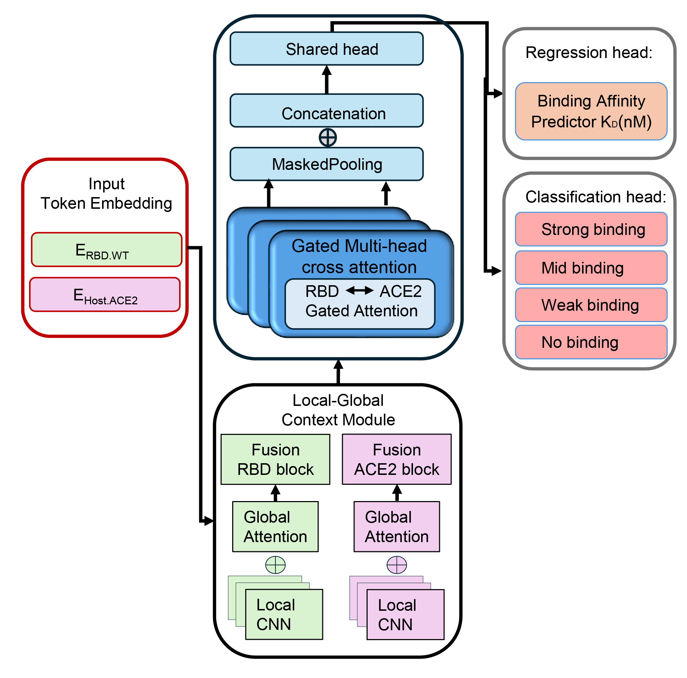

Deep Learning · PLMs
Compat Net: Interaction aware protein compatibility prediction model
A multi-task deep learning framework using protein language models and transformer-based gated cross-attention to model viral–host protein interactions.